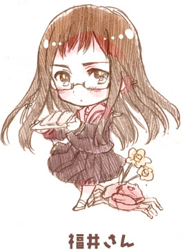
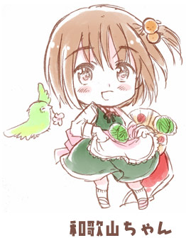
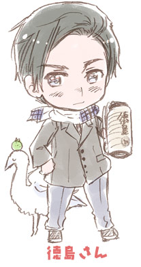

|
らくがき都道府県さん！
リクエストの都道府県さんが結構たまったので平たくまとめ。
■東北■
穏やかで芯が強そうなイメージで描きました。
仲良くなると色々にこにこ話してくれるはず。
温泉大好き。
長身の美人さんをイメージしてみました。
しっとりした町並みが広がる肥沃な土地で
ゆったりとすごす女の子。
持ってるのはミニなまはげさん。
旧バッピーちゃんじゃない。
秋田の湖に伝わる伝説は切ないものが多くて
子供ながらに湖見ながらしんみりしたものです。
遠野のかっぱは赤いんだそうで
赤く塗ってみました。
イーハトーヴォな浪漫漂う文学少女を
イメージしたんですがもうちょっとふわふわさせたい。
お豆腐大好き。
平泉と遠野には秋に遊びに行ったのですが
紅葉をバックに厳かな雰囲気が漂う
仏閣や曲がり家は本当に美しいです。
OH！バンデス！
見所も美味しい名物もたくさんある宮城君。
社交的で快活そうな感じにしてみました。
ずんだもちうまいよずんだもち。
松島にあるベルギーオルゲールミュージアムの生演奏は
本当に感動するので松島観光のさいはぜひ行ってみてくださいな。
あと塩釜の魚は本当に美味しいです。
素朴でせっせせっせこつこつやる笑顔が可愛い女の子。
持ってるのは具がいっぱい入ってる芋煮鍋。
芋煮大好き！こんにゃくははずせないよね！
山形は個性的な洋館が多くて
洋館好きにも楽しい場所です。
このシリーズの発端↑
納豆を結構よく食べる。
ちょっとアクセスが大変ですが
大内宿とかとうのへつりなどおすすめなので
福島観光の際はどうぞ！
ちなみに山口さんとは結構交流がある。
■関東■
面倒見がよくて気風がいい姐さんっていう感じに書いてみました。
やきまんじゅうに餡は入れる派か入れないか派で
県民同士結構語れるんだそうです。
追記：入れない派がほとんどだそうです。
聞けば聞くほど美味しそうな食べ物だなぁ。
ちなみにこんにゃくは作るのにものすごく手間がかかるみたいで
全工程見て大変さにビックリ！
美味しいこんにゃくが食べられるのは幸せです。
多くの仏閣、史跡、温泉、レジャー施設と見所満載の栃木君。
観光資源が豊富でありながら自己主張は控えめな
ふわっとしたイメージで描いてみました。
根は強い。
日光や尾瀬、宇都宮には何度か遊びに行きましたが
いくたび新しい発見があって面白いです。
ちょっと林があるとかわいいリスが普通に
ちょろちょろ歩いてて幸せな気分になります。
スタミナ健太くん像が可愛くて好きです。
カラッとしてて豪快そうな感じの
さっぱりした青年という感じにしてみました。
水戸の梅祭りは、偕楽園の開放感と梅の淡い色に囲まれて
とてもさわやかな気持ちになります。おすすめ。
あんこうさんは見つめ合うと意外と怖い。
お花に囲まれる人懐こい千葉さん。
郷土に伝わる昔話もかわいいものがおおくていいですぞ。
ちょっと寝不足さん。
千葉の美味しいものはお世話になってる方のおかげで
いろいろと頂いています。
千葉は美味しいものでいっぱいだ！
こやつどこかで…！！
埼玉名産の深谷ねぎは本当にうまい。
てんぷらにして塩かけるだけでねぎがこんなに甘くてうまいとは！
武蔵野うどんにねぎいっぱい入れてもうまいですよ。
大宮の鉄道博物館は天国。クモハかわいいよクモハ。
館内で食べられるものも鉄道好きや
ノスタルジックに浸りたい人には嬉しいものばかりです。
東京文化を押し出す感じにしてみました。
山手さんもきっといるはず。
宵越しの金は持たないに違いない。
東京に残ってる下町の風景は
今後残してほしい日本の風景の一つだと思います。
あと下町は猫やその土地に伝わる昔話が多くていいね！
もんじゃはなんとか焼き方覚えたんですが
お店によって結構メニューが違うので
お気に入りの店とメニューを探すのも楽しいですよ。
もっと活発そうな感じにしようかと思っていたのですが
海が好きそうな正統派イケメンっぽい感じにしました。
川崎さん横浜さんや鎌倉さん、平塚さん…と個性豊かな
メンツに囲まれて毎日忙しそうです。
伝統を守り続けてるもの、 逆にとっても革新的なもの
伝統とモダンが混ざり合った土地柄。
ビスカウトうまいよビスカウト。
カレーうまいよカレー。
■北陸■
空から謡が降ってくる石川さん。
石川はどこ行ってもお魚が安くて美味しい。
あといしるは買って帰ると料理の幅が広がります。
ムジナさんは昔能登島が凶作だったときに
ムジナさんが人間に化けてお城にもぐりこみ
能登島の苦境を伝えてその年の年貢を免除してもらい
能登島を救ったという昔話から。
だから能登島の人達とむじなさんは仲がいいんだそう。

隙が少なそうな気が強い働き者の
女の子っぽいイメージで描いてみました。
もってるのはちょっと分かりにくいけど羽二重もち。うまい。
福井の海沿いは車で走ってるだけで
町並みや船が本当に魅力的でドキドキします。
福井の方言てぬぐいを頂いたので飾っています。
福井の方言もっと勉強したい！！
努力家で色々とことんやりたがる職人っぽい感じをイメージしています。
後ろの生き物がわかった人はかなりすごいぞ！！
（自分でもよくわからなくなってきた）
富山の家はどっしりとしていて黒くてカッコイイのが多くて
一度じっくり写真取りに行きたい。
新潟さん考え中…。
新潟は色々何気ない建物が素敵だったり
さらっと親切にしてくれたりする所なので
キャラもそんな感じにしたいですね。
■近畿■

７年前に描いた和歌山ちゃん↑
兵庫の多面性に富んだ
和服も洋服も似合いそうな人をイメージしました。
■四国■

髪型がちょっと渦巻きです。
はちきんさんをイメージして描いてみました。
帽子みたいなパンは貰って食べたけどうまうま。
■九州■
コメントはまたのちほど。
【ここまでのまとめ】
>あとに描かれたキャラのほうがものが多くてうらやましい
すまぬ…すまぬ…

|